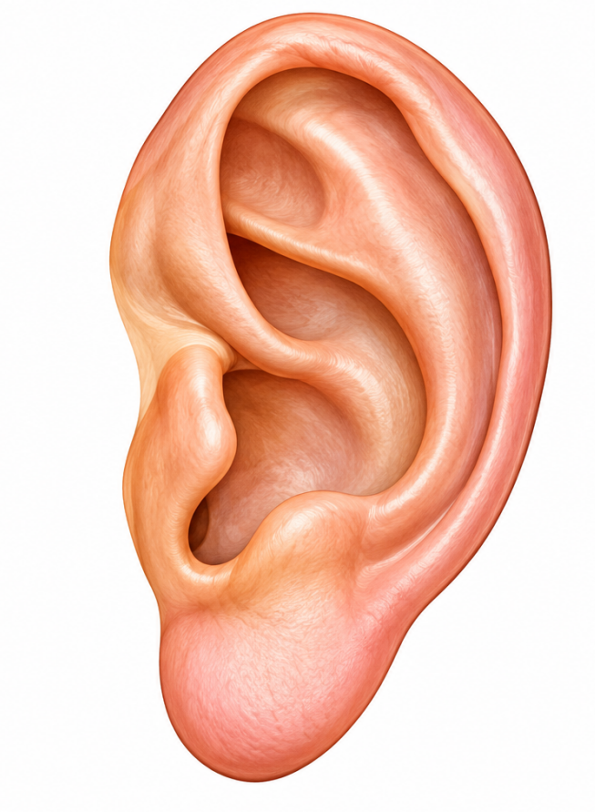
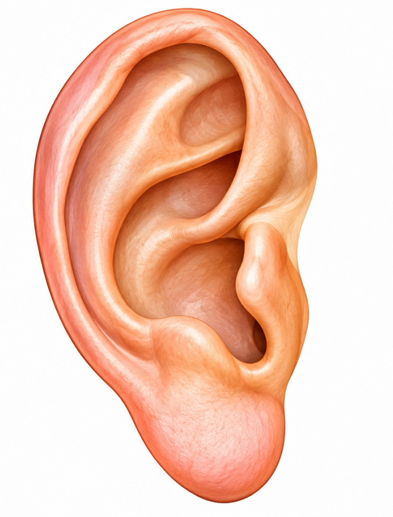

Sağ ve sol kulak
Giriş bekleniyor...
Sol Kulak · Ön yüz

Konum henüz kayıtlı değil.
Sağ Kulak · Ön yüz

Konum henüz kayıtlı değil.
Giriş bekleniyor...

Konum henüz kayıtlı değil.

Konum henüz kayıtlı değil.